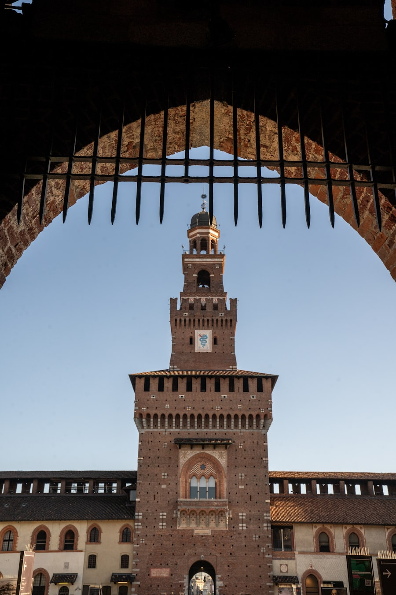
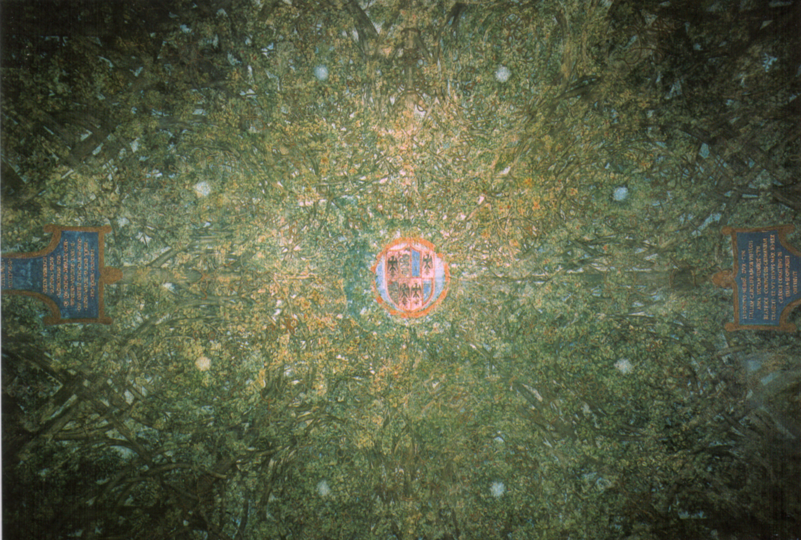
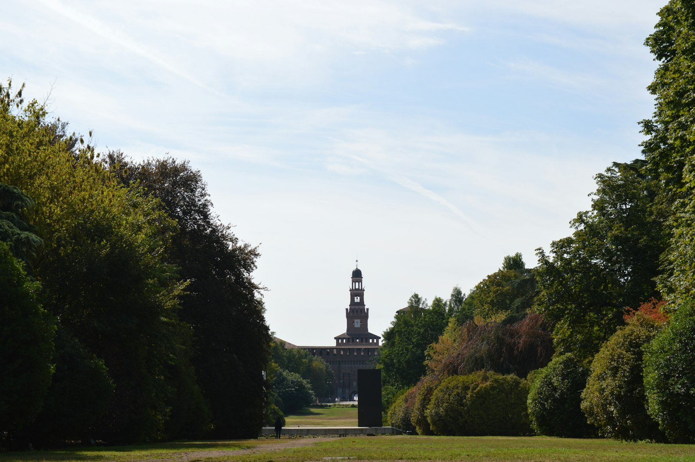
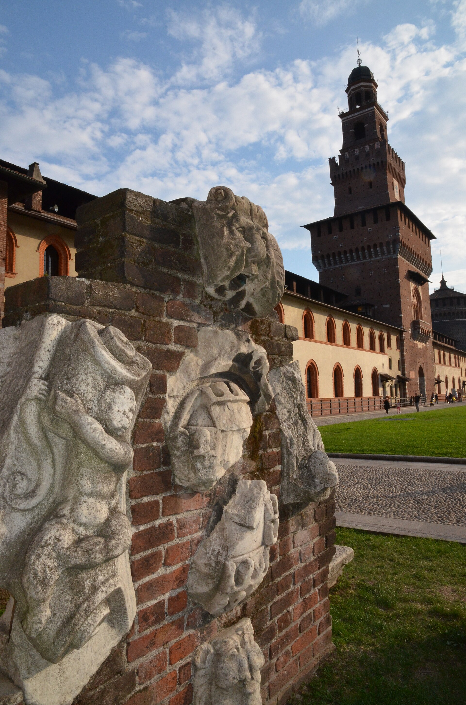
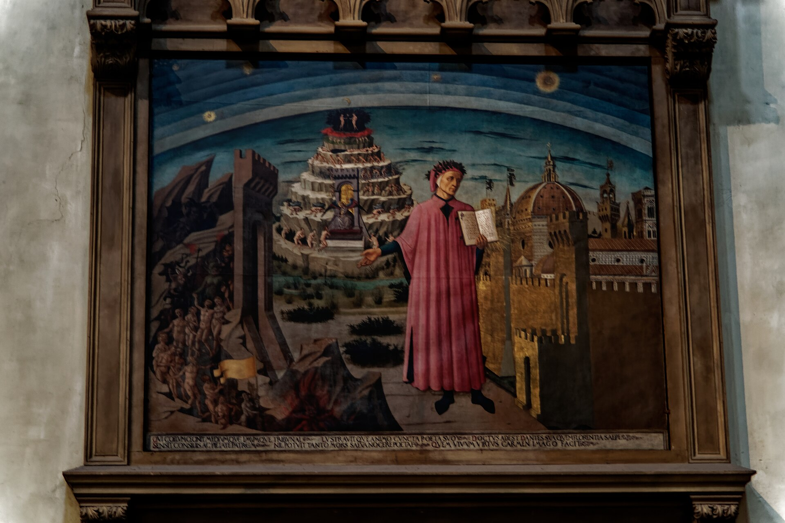

14 世纪维斯孔蒂家建、1450 年雇佣兵队长弗朗切斯科·斯福尔扎武力“续住”的公爵府。达芬奇与布拉曼特都曾在此效力。今天城堡里是博物馆群：古代艺术、绘画、乐器、家具与装饰艺术--最深处的一间小厅里，放着米开朗基罗临终前仍在凿的《隆达尼尼圣殇》。
看点路线
Il Percorso
- 1穿过菲拉雷特塔门楼进入军械库庭院
- 2古代艺术馆：米开朗基罗厅《隆达尼尼圣殇》
- 3绘画馆：曼特尼亚、乔凡尼·贝利尼、真蒂莱·达·法布里亚诺
- 4达芬奇的“厅室”（Sala delle Asse，季节性开放）
- 5出后门进森皮奥内公园，走到和平凯旋门
馆藏名作
Musei del Castello Sforzesco
雕塑与古代艺术Scultura e Antichità · 10 件

《隆达尼尼圣殇》
生命最后几天仍在凿的作品：基督与玛利亚拉成一条细长的垂直线，此前的版本被他自己凿掉重做。这不是未完成，而是 89 岁的大师对“完成”的放弃。

达芬奇「木板厅」壁画
为公爵画的整厅树木藤蔓壁画（模拟凉棚枝叶穹顶），2010 年代修复后重见天日--达芬奇在米兰“上班”的办公室实景，全球仅此一处。
古埃及馆：石棺与木乃伊
意大利规模最大的埃及收藏之一：彩绘石棺、木乃伊与丧葬面具。斯福尔扎时代埃及是米兰公爵的“东方想象”，考古队后来把它变成科学。
古埃及馆：亡灵书与书吏像
莎草纸《亡灵书》与盘坐书吏的石灰岩像--古埃及“公务员”的标准像，四千年前的办公室美学。
伊特鲁里亚与罗马碑铭
米兰建城两千六百年的文字证据链：伊特鲁里亚铭文、罗马墓碑与市政法令--古罗马梅迪奥拉努姆（Milanum）的地层档案。
中世纪米兰雕塑群
从大教堂工坊流出的先知与圣母石雕：米兰自己的哥特黄金时代，躲在城堡地下室里发光。

兵器与盔甲库
全场最受欢迎的展厅：米兰板甲、决斗长剑与骑士铠甲--米兰曾是欧洲最好的兵器工坊，“米兰造”在 16 世纪就是军工品质认证。
乐器博物馆
从羽管键琴到早期小提琴的乐器通史--斯福尔扎与维斯孔蒂宫廷的“音乐米兰”，在这里能听见回声。
家具与装饰艺术馆
文艺复兴镶板橱柜、lume giorno 玻璃与 18 世纪漆木--米兰设计之城的工艺前传。

城堡门楼与斯福尔扎纹章雕刻
中央塔楼的浮雕讲着斯福尔扎的发家史；穿过门洞时的回声，是建筑声学的小彩蛋。
绘画Pinacoteca · 10 件
《耶稣受难像》
油画技法从尼德兰传入意大利的关键人物：荒山枯木间的小型受难像，人物极小、天地极大--北方精神与意大利构图的嫁接范本。

《但丁与神曲》
但丁手持《神曲》站在佛罗伦萨城前，身后地狱-炼狱-天堂三界宇宙。但丁形象的“官方定妆照”，中世纪人理解《神曲》的视觉说明书。
伦巴第文艺复兴祭坛画群
米兰公国自己的画派：金底余晖与北方式的写实细节并存。达芬奇到米兰之前，这里的画家们已经把“米兰画派”的底色铺好。
克雷莫纳画派（坎皮兄弟）
克雷莫纳的坎皮家族把帕尔玛与威尼斯的样式主义带进伦巴第--布雷拉之外，斯福尔扎藏着另一半的北意绘画史。
十七世纪伦巴第绘画
反宗教改革时代的震撼美学：殉道、狂喜与黑色的光。米兰大教堂时代的另一张面孔。
马尼亚斯科的风景人物
笔触狂放的小人物风景：修士、乞丐与海盗在颤动的线条里活动。一个“用画笔速写的说书人”。
威尼斯画派藏画
城堡绘画馆的威尼斯份额--伦巴第贵族几百年来对威尼斯色彩的持续“进口”。
佛兰芒与荷兰小画
静物、室内与风俗小画：米兰贵族的“轻收藏”趣味--大壁画之外，挂在卧室里的那一种。
斯福尔扎时期肖像
公爵家族与廷臣的侧面像：卢多维科“摩尔人”、贝亚特丽切·德斯特……权力如何在肖像里摆姿势。
图纸与版画收藏
从大教堂工地图纸到 20 世纪版画--米兰作为“图纸之城”的暗线收藏，研究者按预约查阅。
历史故事
Le Storie
壹雇佣兵队长的登顶
弗朗切斯科·斯福尔扎是那个时代最成功的雇佣兵队长：替佛罗伦萨打过、给教皇打过、最后受雇于米兰维斯孔蒂公爵--顺便娶了公爵的私生女比安卡·玛丽亚。
1447 年公爵绝嗣而死，米兰宣布成立共和国并雇斯福尔扎打仗。他打赢了，然后调转枪口围攻自己的雇主：1450 年，米兰议会“全票”推举他为公爵。马基雅维利后来在《君主论》里把他当作“凭实力上位”的范例。
他的儿子“摩尔人”卢多维科掌权后，把城堡变成文艺复兴宫廷：聘达芬奇为“工程师与画师”、请布拉曼特修感恩教堂后殿。一座雇佣兵的军堡，雇出了文艺复兴的米兰章节。
贰《隆达尼尼圣殇》：减法的一生
1552 年，77 岁的米开朗基罗开始为自己的墓雕一尊圣殇。雕到 1555 年左右，他对成品不满，亲手凿掉了已成形的右臂，整体重新构图。
1564 年 2 月，他在罗马逝世前几天还在凿这块石头。工人们发现时，雕塑几乎“退回”粗坯状态：只有圣母与基督的面部依稀相拥。
艺术史家公认：从 24 岁光洁圆润的《圣殇》到 89 岁近乎抽象的《隆达尼尼》，米开朗基罗用一生证明了同一个命题的两种答案：石头里的灵魂，到底要不要放出来？
叁达芬奇的“办公室”
城堡东北翼的“木板厅”（Sala delle Asse）是达芬奇在米兰的“工位”：1498 年他为公爵绘制的整厅树木藤蔓壁画，模拟一座凉棚的枝叶穹顶。
它被后来的粉刷覆盖了几个世纪，1893 年被重新发现，21 世纪的修复又找到了更多底层草稿--包括达芬奇原计划的金色结绳纹样。
站在厅中央抬头：枝叶间的天空是“假的”，但 500 年前公爵宴会时宾客的惊叹是真的。达芬奇在米兰“上班”的实景，全球仅此一处。
肆1521：火药塔的爆炸
1521 年，城堡的 Filarete 塔被闪电击中，塔内的火药库爆炸--整座中央塔楼炸毁，碎片飞越今天的大教堂广场方向。
此后的重建换了风格与名字（现在的塔是 1900-1905 年贝尔特拉米的“考古式复原”）。塔顶的圣安布罗斯像与狮子，是米兰城市身份的密码。
看塔身砖色的新旧分布：那道色差里埋着一场爆炸与一次复原--建筑的外科手术史。
伍1848：被自己人炮击的城市
1848 年米兰“五日起义”，市民筑街垒反抗奥地利占领军。元帅拉德茨基退入斯福尔扎城堡，随即用城堡的火炮轰击自己的城市--米兰人把那一周称为“五日”（Cinque Giornate）。
维也纳的圆舞曲《拉德茨基进行曲》为这位炮击米兰的元帅而作--直到今天，维也纳新年音乐会的保留曲目在米兰听起来仍然复杂。
城墙上的弹痕被刻意保留了几处：一座城堡对一座城市的亏欠，记在砖上。
陆贝尔特拉米的“考古式复原”
1893-1905 年，建筑师卢卡·贝尔特拉米主持了城堡的大改造：把军营改回“想象的文艺复兴城堡”，并植入博物馆群。
他的哲学是“复原它应有的样子”而非“恢复原样”--今天看到的雉堞、塔楼与砖色，一半是 15 世纪、一半是 19 世纪的想象。意大利人发明了“修复式城市化”。
这一改造当时的争议极大（被骂“伪造历史”），如今却是全世界古城修复的教科书案例--先例总是先被骂。
柒古埃及馆的“米兰情结”
城堡的古埃及收藏是意大利规模最大的之一：石棺、木乃伊、书吏像与亡灵书--主体来自 19 世纪米兰市民与学者的捐赠。
为什么是米兰？19 世纪的米兰是意大利的探险与商业之都，商人、领事与考古爱好者把埃及“寄”回了家。馆内的“斯福尔扎木乃伊”至今是孩子们的最爱。
埃及馆的展陈刻意保留 19 世纪的橱柜式陈列--它本身就是一件“收藏史的展品”。
捌乐器博物馆与“斯卡拉的回声”
城堡的乐器博物馆藏着从羽管键琴到早期小提琴的通史--包括几件与斯卡拉歌剧院相关的乐器与戏服设计。
米兰的音乐工业史在这里接上：克雷莫纳（斯特拉迪瓦里的城市）离米兰一小时--伦巴第曾是欧洲乐器的“硅谷”。
馆内常设的互动区可以听古乐器的录音--在管风琴与鲁特琴之间，能听到“米兰之音”的进化史。
玖森皮奥内公园与“凯旋门的方向”
城堡后门的和平凯旋门（Arco della Pace，1807 年为拿破仑动工）原本朝向巴黎--拿破仑倒台后，奥地利人把它转了个方向朝向维也纳；意大利统一后再“转回”面向人民。
一座门的三次转向，是米兰两百年政治史的指南针。今天的门下属于滑板少年与遛狗的人。
城堡-公园-凯旋门这条 1 公里的轴线，是米兰人的“客厅走廊”：晨跑、野餐与 protest 游行的默认路线。
拾城堡的“免费时段”学
城堡庭院与塔楼门洞全天免费开放；博物馆联票 €10，含古代艺术馆（米开朗基罗厅在最深处）、绘画馆、家具馆与乐器馆。
米开朗基罗厅动线在最里面--别在兵器库逛到失忆：留 20 分钟给《隆达尼尼圣殇》，那里的灯光专为它设计。
每周一博物馆闭（庭院仍开放）--把它与布雷拉排在同一天会扑空，经典的排程陷阱。
参观贴士
Consigli Pratici
- 城堡免费、博物馆 €10 联票，重点看古代艺术馆（米开朗基罗厅在最深处）
- 达芬奇木板厅（Sala delle Asse）修复后需看当日开放告示
- 周一博物馆闭（城堡庭院仍开放）
- 经典动线：城堡 -> 森皮奥内公园 -> 和平凯旋门 -> 布雷拉，步行 30 分钟串联半日
- 喷泉广场（Piazza Castello）拍塔楼全景，下午顺光
- 城堡内咖啡馆性价比正常，公园野餐也是本地选项
顺路同游
Da Non Perdere